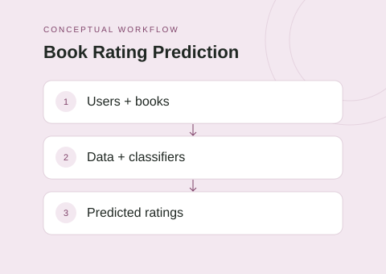

The idea
This project connects Book-Crossing data preparation to supervised rating prediction. Although the repository is named a recommender system, its documented workflow focuses on predicting ratings and rating tiers for user–book pairs.
Project scope
- Clean and combine user, book, and rating datasets.
- Discretize selected fields and perform feature selection.
- Run decision-tree and k-nearest-neighbor classifiers.
- Generate classification reports, confusion matrices, and individual predictions.
Technical approach
Separate Python scripts handle preprocessing, discretization, feature selection, and model execution. Command-line options select the classifier and whether to predict a specified user–book pair, making the experiment pipeline explicit and inspectable.
Scope & limitations
This is presented as rating prediction, not as a deployed personalized recommendation service. No ranking-quality or model-performance claims are made without reproducing the evaluation. Dataset preparation is required to run the pipeline.